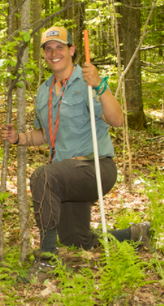

 Will Kingery is currently employed as a Security Dispatcher with Archer Daniels Midland in Decatur IL. Prior to working with ADM’s security team, Will served in the Illinois National Guard as a 25C, radio operator following his completion of Army Basic Training at Fort Benning (BCT) and Advanced Individual Training (AIT) at Fort Gordon. He has continued his training and education after the army at Richland Community College where he is pursuing a BA in Network Technology; he hopes to one day return for a further education in Physics after he establishes his career. Will makes up 50% of a happy marriage which he hopes his better half completes the 100%. He met his wife during Junior High school and the two began to date during High School at MacArthur High School in Decatur IL. The two graduated from High School in 2011 and would go on to marry in 2015. The two share a common interest in board games and various tabletop games to include Dungeons and Dragons, Munchkin, Battle Tech, and many more. Will began to truly get into the hobby some time between 2005 and 2006 when his uncle gave Will some of his old Warhammer Miniatures. Will finds these games helpful in relaxing following long and stressful weeks of school and work. Other than boardgames and table tops, Will enjoys hunting and cooking; he prides himself on making his own noodles and sauces for various Italian cooking.